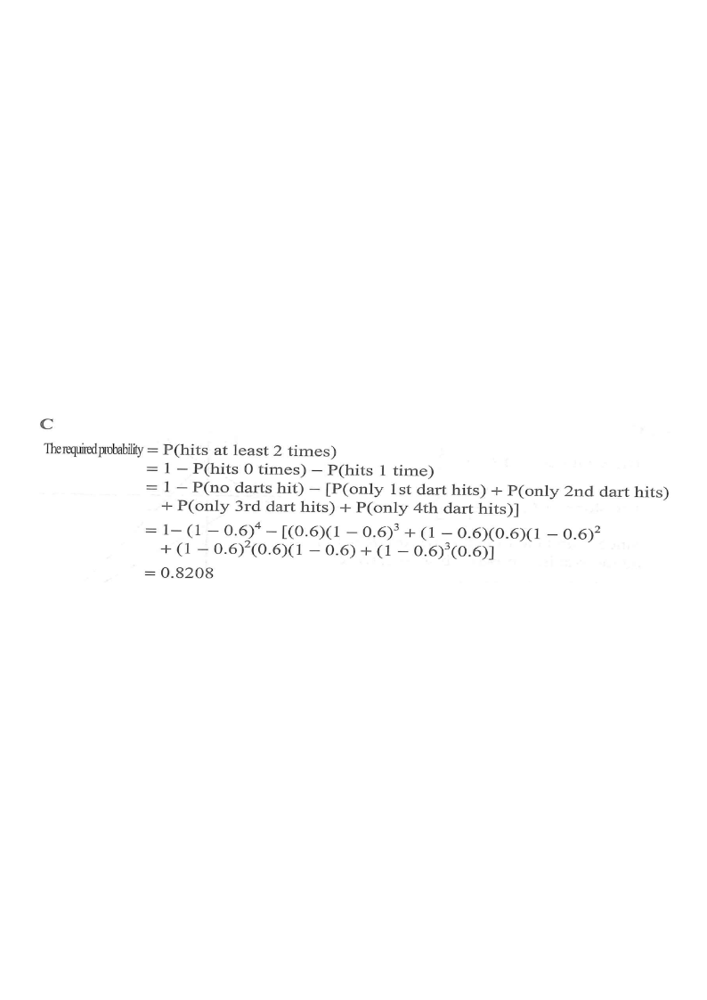

Step 1: p(hit) = 0.6, p(miss) = 0.4 for every throw.
When a boy throws a dart, the probability that he hits the target is $0.6$. If this boy throws the dart $4$ times, find the probability that he hits the target at least $2$ times.

Each throw is an independent trial with two outcomes: hit (H, probability $p = 0.6$) or miss (M, probability $q = 1 - 0.6 = 0.4$). There are $n = 4$ throws.
Hint: fixed number of independent throws, constant hit probability ⇒ use the binomial distribution / complementary counting."At least $2$ hits" is the complement of "at most $1$ hit", i.e. exactly $0$ hits or exactly $1$ hit.
$$\text{required } P = 1 - P(\text{0 hits}) - P(\text{1 hit})$$
Hint: $P(\text{at least }2) = 1 - P(\text{0 or 1 hit})$. This avoids adding eight separate cases.All four throws must miss:
$$P(\text{0 hits}) = (0.4)^4 = (1-0.6)^4 = 0.0256$$
Hint: multiply the miss probability $0.4$ four times — one path M–M–M–M in the tree.The hit can occur on any one of the $4$ throws. Each such sequence has probability $(0.6)(0.4)^3$, and there are $4$ of them, so
$${}^{4}C_{1}(0.6)(0.4)^3 = 4 \times 0.6 \times 0.064 = 0.1536$$
Hint: in the tree, exactly $4$ paths show precisely one orange (Miss-free) branch — H–M–M–M, M–H–M–M, M–M–H–M, M–M–M–H.$$ \begin{aligned} P(\text{at least 2 hits}) &= 1 - (0.4)^4 - 4(0.6)(0.4)^3 \\[4pt] &= 1 - 0.0256 - 0.1536 \\[4pt] &= 1 - 0.1792 \\[4pt] &= 0.8208 \end{aligned} $$
Hint: $0.0256 + 0.1536 = 0.1792$, so the answer is $1 - 0.1792$.Directly summing $k=2,3,4$:
$$\sum_{k=2}^{4}{}^{4}C_{k}(0.6)^k(0.4)^{4-k} = 0.3456 + 0.3456 + 0.1296 = 0.8208 \;\checkmark$$
Hint: both routes agree, confirming option C.Question. When a boy throws a dart, the probability that he hits the target is \(0.7\). If he throws the dart \(3\) times, find the probability that he hits the target at least \(2\) times.